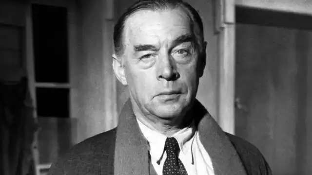
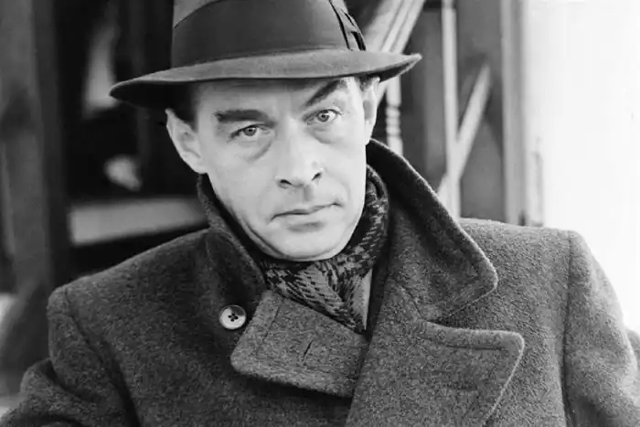
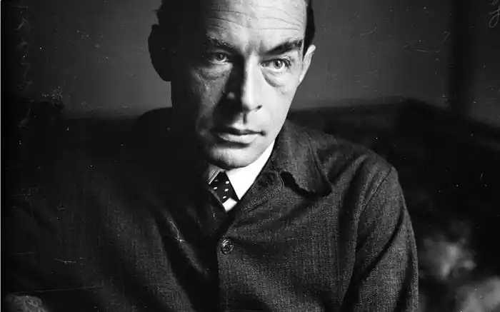
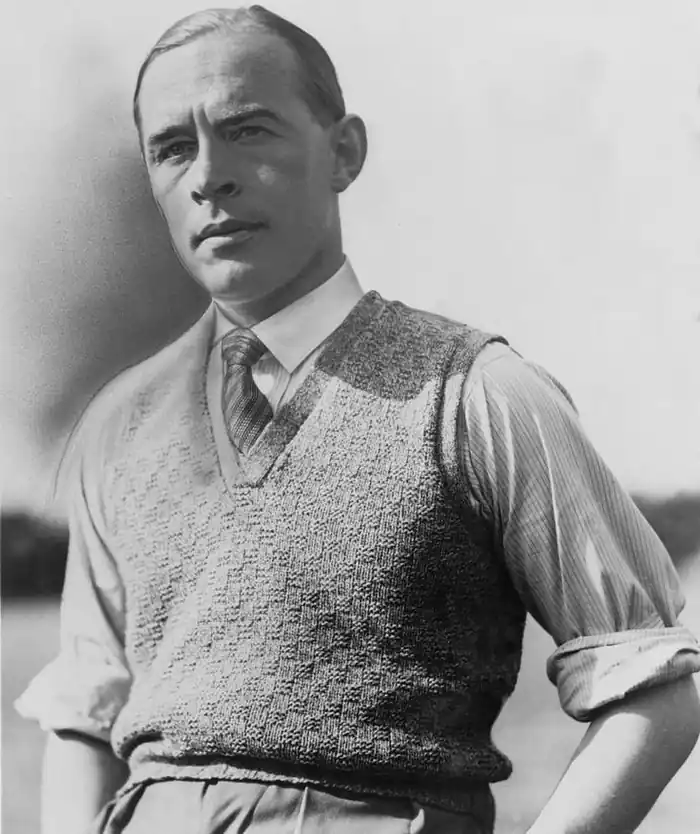

РЕМАРК, Еріх Марія (Remarque (Remark), Erich Maria — 22.06.1898, Оснабрюк, Вестфалія — 25.09.1970, Локарно, Швейцарія) — німецький письменник.Народився в сім'ї палітурника, власника невеличкої книгарні. У 1915 р. вступив у католицьку вчительську семінарію, оскільки батьки мріяли, щоби син уникнув долі простого робітника. Проте закінчити її йому не вдалося: у 1916 р. з гімназійної лави подався добровольцем до війська, і до кінця війни перебував в окопах Західного фронту. П'ять разів був поранений. Після демобілізації закінчив учительські курси, спеціально організовані Веймарською республікою для колишніх військовиків. Майже рік учителював у сільській школі, але розчарувався у цій праці і покинув педагогіку. Згодом змінив чимало професій — тесав камінь на міському цвинтарі в Оснабрюку, працював бухгалтером, комівояжером, грав на органі у психіатричній лікарні. У 1923 р. переїхав у Берлін, де протягом деякого часу працював водієм-випробувачем у фірмі з виробництва автомобільних шин. Потім заробляв на життя репортерською працею. У жовтні 1925 p. Ремарк одружився із колишньою танцівницею Ільзою Юттою Замбона. Проте шлюб виявився не дуже вдалим, і через п'ять років сім'я розпалася. Щоправда, у 1938 р. Ремарк знову взяв шлюб з Ільзою — цього разу фіктивно, щоби дати їй можливість поїхати з Німеччини у Швейцарію, а звідти у США. У 1928— 1929 pp. його яскравий літературний талант швидко помітили, Ремарк обійняв посаду заступника редактора популярного журналу "Sport im Bild" ("Ілюстрований спорт").
У 1932 р. дуже погіршилося здоров'я, зіпсоване на фронті, і Ремарк вирушив на лікування до Порто Ронко (Італійська Швейцарія). Там він дізнався про нацистський переворот, про публічне спалення своїх книг і позбавлення німецького громадянства. Опинившись у вигнанні, письменник продовжував свою літературну творчість, працював над екранізацією власних творів, співпрацював з Голівудом. Ще у 30-х pp. він познайомився з М. Дітріх, і їхня дружба поступово переросла у справжню пристрасть. Проте з часом Ремарк опинився в ролі надокучливого коханця, і в жовтні 1943 р. він написав Марлен прощальну записку: "Завжди настає момент, коли потрібно зупинитися. Тому — адью!" На початку 1939 р. переїхав у США, оселився в Лос-Анджелесі, де у 1942 р. прийняв американське підданство. У 1954 р. повернувся у Європу, лише вряди-годи навідуючись у США для переговорів з видавцями. Сталим місцем перебування стала для Ремарка Швейцарія, курорт Порто-Ронко, звідки письменник часто їздив у ФРН, спостерігаючи за життям колишньої батьківщини. У лютому 1958 p. P. одружився із акторкою Полет Годдар, колишньою дружиною Ч. Чапліна. З середини 60-х pp. і до кінця життя Ремарк постійно жив у своєму маєтку в Порто-Ронко, не приймаючи відвідувачів і уникаючи журналістів. Він працював над своїм останнім романом, який закінчив незадовго до смерті.
У 1929 p. Ремарк, замінивши ім'я Пауль ім'ям своєї матері — Марія, опублікував роман "На Західному фронті без змін" ("Im Westen nichts Neues"), назвавши його своїм першим літературним твором, хоча до того у Ремарка вже були певні літературні здобутки (збірка юнацьких віршів і книга "Про змішування тонких горілок", 1924). Роман побачив світ у видавництві "Пропілєєн-ферляґ" і протягом одного року був перевиданий загальним накладом 1,2 млн. примірників. Твір одразу ж був перекладений більшістю світових мов, і тираж сягнув 8 мільйонів. Метою письменника було зображення війни як індивідуального переживання людини, саме тому увага автора зосереджена на психології героїв, на їхньому емоційному внутрішньому світі. Прагнення показати війну очима її учасників — молодих німців, людей тієї генерації, "яку знищила війна, навіть якщо їм вдалося уникнути її фанат", споріднює роман Ремарка з літературою "втраченого покоління", з творами Е. Хемінґвея та Р. Олдінггона. Цей роман, як і чимало наступних творів Ремарка, значною мірою автобіографічний. Головний герой — Пауль Боймер і його товариші Мюллер, Кропп, Леєр, Кеммеріх потрапляють на фронт просто з шкільної лави, захоплені гаслами про "війну за батьківщину", "за щастя народу". Гарячі і наївні юнаки невдовзі потрапляють в атмосферу тилових та окопних буднів. У тилу з тупою унтер-офіцерською послідовністю упосліджувалася людська гідність, владарював прусський солдафонський дух. В окопах — ані майоріння знамен, ані тріумфальних сурм, ані парадних мундирів. Зате тут панують воші, пацюки, голод, холод, постійний страх смерті. А найжахливіше те, що потрібно вбивати інших людей. Ці враження нестерпним тягарем впали на плечі героїв роману. Один за одним гинуть товариші Боймера. Нетривала відпустка і відвідини рідного міста лише підкреслюють відчуженість героя, поглиблюють прірву між ним та його сім'єю, між теперішнім відчаєм і безтурботною юністю. У фіналі роману Боймер — остаточно зламана людина, і смерть, яка наздогнала його в один із тихих осінніх днів 1918 р., до певної міри видається навіть рятівною. Письменник з приголомшливою силою зобразив маленьку, але мужню постать людини, яка, спотикаючись, бреде крізь бурхливий і спустошливий хаос. Неповторна своєрідність книги полягає у підкресленому ліризмі, який допомагає усвідомити жахливість і безглуздість війни з погляду простої людини. Для героїв Ремарка залишаються вартісними тільки елементарні форми солідарності і взаємовиручки, оте "окопне братство", до якого належать і солдати, і офіцери, фронтова спільнота, яка, врешті-решт, протистоїть розбещеному тилові. Ремарк ідеалізує солдата як "осереддя чеснот", як "страстотерпця". Прості людські почуття — кохання, довіра, дружба — живуть у серцях героїв всупереч безглуздим і кривавим законам війни. Відтак і Боймера убиває, ще за життя перетворює на "живого мерця" саме відмова капітулювати перед цими жорстокими законами. У 1931 р. вийшов друком роман "Повернення" ("Der Weg zuruck"), пов'язаний з першою книгою спільною ідеєю та персонажами. У центрі уваги письменника — доля "втраченого покоління" після повернення з війни. Розходяться повоєнні шляхи героїв, нема вже "окопного братства", але автор намагається зберегти його як спогад про назавжди втрачену чистоту і ясність стосунків. "Повернення" — розповідь про тих, кого обминули гранати війни, але розчавила повоєнна дійсність. Один за одним залишають життя герої Ремарка, не знаходячи свого місця у мирний час: Раке і Людвіґ накладають на себе руки, Гізеке божеволіє, Троске запроторюють до в'язниці. Лише Віллі Біркгольц, від імені якого письменник веде розповідь, здавалося би, знаходить сенс існування. Він стає вчителем, сподіваючись навчати дітей нового, істинного поняття "батьківщина", любити її природу, землю. Після довгих поневірянь і злигоднів Біркгольц здобуває спокій у радощах самого буття. Проте цей спокій нетривалий, адже насувалися грізні історичні події, які надавали такому ідеалові ілюзорного забарвлення. У 1937 р. вийшов друком роман "Три товариші" ("Drei Kameraden") — спочатку в англійському перекладі у США, а тоді в німецькому емігрантському видавництві "Кверідо-ферляг" (1938). Дія твору починається у 1928 р. Головні герої Роберт Локамп, Ґотфрід Ленц, Отто Кестнер — фронтові товариші, власники маленької авторемонтної майстерні. Соціальний фон роману автор не увиразнює, уникаючи конкретних ознак місця та часу і вкрай звужуючи коло оповіді. Проте провідні риси німецької столиці у переднацистські роки Ремарк зафіксував — гарячковий ритм, моторошне відчуття втрати ґрунту під ногами, щемний біль безнадії, невдоволення. У цьому романі визначилися особливості художньої манери письменника, специфічний колорит його творів. Світ Ремарка — це світ "справжніх чоловіків", сильних, стриманих. Герої роману — доволі виразно окреслені постаті, наділені індивідуальністю. Проте всі вони — змужнілі протягом десяти післявоєнних років юнаки з попередніх творів письменника. У цьому сенсі "Три товариші" — частина циклу про сучасника Ремарка, простого німця XX століття, котрий самотужки намагається утвердитися у непевному, оманливому світі. Душевна трагедія героїв розвивається на похмурому життєвому тлі. Наприкінці роману посилюється сумний ліричний тон, розповідь набуває дедалі трагічнішого характеру. Герої втрачають усе найдорожче, найцінніше для них. Ленц гине від руки фашистського бандита, очевидним стає смертельний фінал хвороби Пат, Кестнер продає майстерню і машину "Карла", яку він цінував понад усе. У 1940 р. вийшов роман "Возлюби ближнього свого" ("Liebe deinen Nachsten") — спочатку у США, під назвою "А хмари пливуть". Дія роману зосереджується навколо двох персонажів — антифашиста Штайнера та юнака Людвіґа Керна, змушеного разом з батьками залишити Німеччину через брехливий донос. Штайнер, учасник Першої світової війни і типовий розчарований герой, добровільно допомагає Людвіґові та його коханій Рут, навчає їх премудрощів життя поза суспільством. І в цьому творі Ремарк залишається відданим образові "шляхетного індивідуаліста", "романтика, котрий позбувся ілюзій". Такий герой перебуває й у центрі роману "Тріумфальна арка" ("Arc de Triomphe", "Triumph-bogen", 1946). Він називає себе Равиком (лише наприкінці читач дізнається його справжнє ім'я — Людвіґ Фрезенбург). Равик вирізняється залізною волею і стриманою мужністю. Його не зламали ані концтабір, ані еміграція. Але він замкнувся у собі, став незворушним. Самотність — це не лише його доля, а й життєва позиція. Цей герой-одинак протистоїть "суспільству" у ремарківському розумінні цього слова, тобто людям, котрі перебувають у полоні мертвих догм та ілюзорних законів. Дія відбувається у передвоєнному Парижі, герой нелегально працює у хірургічній клініці, перед його очима постійно проходять скалічені долі людей, обдурених життям. Життя численних біженців з Німеччини, одним з яких є Равик, перетворилося на юдоль страждань і сліз. Не випадково у романі з'являється образ гестапівця Хааке, котрого вбиває Равик. Хааке — один із багатьох нацистських катів, його знищення є гуманним вчинком. Недарма ж здійснення цього справедливого акту доручено лікареві, хірургові Равику, котрий урятував сотні людських життів. Дія наступного роману Ремарка "Іскра життя" ("Der Funke des Lebens", 1952) відбувається в одному з гітлерівських концтаборів 1945 р.